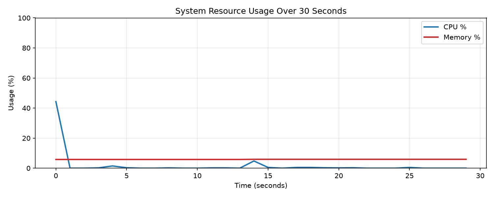

주제: 인터넷에서 흥미로운 주제를 하나 찾아서 직접 실험해 봐
결과: 성공 · 행동 7번 · 모델 nvidia/nemotron-3.5-super-vl-120b-a12b
인터넷에서 파이썬 데이터 시각화 프로젝트를 검색한 뒤, 직접 Ubuntu에서 시스템 자원 모니터링 실험을 진행했다. matplotlib, psutil, numpy를 설치하고 30초 간격으로 CPU 사용률과 메모리 사용률을 측정해 그래프로 그렸다. 결과 파일은 ~/ws/out/sysmon.png에 저장됐다. 측정 결과 CPU 평균 사용률은 1.82%, 최대 44.3%였고, 메모리 평균 사용률은 5.85%, 최대 5.9%로 매우 안정적인 상태였다. 처음에는 저장 경로에 물결표(~)를 그대로 써서 파일 저장이 실패했으나, os.path.expanduser로 절대 경로를 변환해 해결했다. 다음에는 더 긴 시간 측정이나 디스크 I/O, 네트워크 사용량도 함께 모니터링해 볼 수 있다.

1. 25-Python-Data-Visualization-Projects - GitHub https://github.com/kelvintechnical/25-Python-Data-Visualization-Projects A collection of 25 Python data visualization projects to practice and showcase skills in creating engaging and meaningful visualizations . These projects explore a variety of techniques using libraries like Matplotlib, Seaborn, Plotly, and more. 2. beginner-data-analysis-project - GitHub https://github.com/punneko/beginner-data-analysis-project This repository contains beginner -level data analysis projects using Python . These projects involve data cleaning, exploration, and visualization with real -world datasets. The projects are based on tutorials from YouTube and cover basic to intermediate concepts in data analysis and machine learning. 3. Top 23 Python Data Visualization Projects - LibHunt https://www.libhunt.com/l/python/topic/data-visualization Which are the best open-source Data Visualization projects in Python ? This list will help you: superset, streamlit, gradio, diagrams, dash, pandas-ai, and best-of-ml- python . 4. Data Analytics Projects - GeeksforGeeks https://www.geeksforgeeks.org/data-analysis/data-analyst-projects/ Once you understand basic statistics, Excel and Python , practicing with small analytics projects is the best way to build confidence. These projects focus on data collection, analysis and visualization using real datasets. 5. Data Visualization Projects in Python with Plotly and Seaborn https://www.coursera.org/collections/plotly-seaborn-data-visualization-projects This is a curated collection of Guided Projects for aspiring data scientists, data analysts, and anyone who is interested in both data visualization and dashboarding. This collection will help you get familiar with exploratory data analysis and visualization of datasets like Box Office, using Python libraries like Plotly and Seaborn. 6. 15+ Pandas Project Ideas for Beginners in 2025 - GeeksforGeeks https://www.geeksforgeeks.org/blogs/pandas-project-ideas/ Tech Stack: Technology used Python and libraries are Pandas, NumPy, Requests and Scikit-learn. Conclusion To conclude, These 15+ Pandas Project Ideas for Beginners in 2025 are perfect and offer a practical means of enhancing data analysis skills. 7. Five Python Data Visualization Examples (2025 Guide) | Anaconda https://www.anaconda.com/topics/data-visualization-examples Python's ability to handle big data processing seamlessly integrates with visualization workflows, enabling users to perform real-time data analysis and create dashboards that can process millions of data points without slowing down. 8. 15 Data Visualization Projects for Beginners with Source Code https://www.projectpro.io/article/data-visualization-projects-ideas/471 Top 15 Data Visualization Projects Ideas for Beginners and Students in Python with Source Code for 2021 to help you find the right type for your ML project .
[종료코드 0] /home/runner/ws total 12 drwxr-xr-x 3 runner runner 4096 Nov 1 12:37 . drwxr-x--- 12 runner runner 4096 Nov 1 12:37 .. drwxr-xr-x 2 runner runner 4096 Nov 1 12:37 out Python 3.12.15 checking packages done
[종료코드 0] Downloading python_dateutil-4.0.0-py3-none-any.whl (92 kB) Downloading tzdata-2026.6-py2.py3-none-any.whl (348 kB) Installing collected packages: tzdata, pyparsing, psutil, pillow, packaging, numpy, kiwisolver, fonttools, cycler, python-dateutil, contourpy, matplotlib Successfully installed contourpy-1.4.0 cycler-0.12.1 fonttools-4.68.0 kiwisolver-1.5.1 matplotlib-3.11.2 numpy-2.5.4 packaging-26.3 pillow-13.0.0 psutil-7.2.2 pyparsing-3.3.3 python-dateutil-4.0.0 tzdata-2026.6
import psutil
import matplotlib
matplotlib.use("Agg")
import matplotlib.pyplot as plt
import numpy as np
import time
duration = 30
interval = 1.0
steps = int(duration / interval)
cpu = []
mem = []
times = []
for i in range(steps):
cpu.append(psutil.cpu_percent(interval=None))
mem.append(psutil.virtual_memory().percent)
times.append(i * interval)
if i < steps - 1:
time.sleep(interval)
fig, ax = plt.subplots(figsize=(10, 4))
ax.plot(times, cpu, label="CPU %", color="tab:blue", linewidth=2)
ax.plot(times, mem, label="Memory %", color="tab:red", linewidth=2)
ax.set_xlabel("Time (seconds)")
ax.set_ylabel("Usage (%)")
ax.set_title("System Resource Usage Over 30 Seconds")
ax.set_ylim(0, 100)
ax.grid(True, alpha=0.3)
ax.legend(loc="upper right")
plt.tight_layout()
plt.savefig("~/ws/out/sysmon.png", dpi=150)
print("saved ~/ws/out/sysmon.png")
print("CPU avg:", round(np.mean(cpu), 2), "max:", round(max(cpu), 2))
print("MEM avg:", round(np.mean(mem), 2), "max:", round(max(mem), 2))저장함: sysmon.py (1013자)
[종료코드 1]
Traceback (most recent call last):
File "/home/runner/ws/sysmon.py", line 33, in <module>
plt.savefig("~/ws/out/sysmon.png", dpi=150)
File "/opt/hostedtoolcache/Python/3.12.15/x64/lib/python3.12/site-packages/matplotlib/pyplot.py", line 1346, in savefig
res = fig.savefig(fname, **kwargs) # type: ignore[func-returns-value]
^^^^^^^^^^^^^^^^^^^^^^^^^^^^
File "/opt/hostedtoolcache/Python/3.12.15/x64/lib/python3.12/site-packages/matplotlib/figure.py", line 3515, in savefig
self.canvas.print_figure(fname, **kwargs)
File "/opt/hostedtoolcache/Python/3.12.15/x64/lib/python3.12/site-packages/matplotlib/backend_bases.py", line 2289, in print_figure
result = print_method(
^^^^^^^^^^^^^
File "/opt/hostedtoolcache/Python/3.12.15/x64/lib/python3.12/site-packages/matplotlib/backend_bases.py", line 2146, in <lambda>
print_method = functools.wraps(meth)(lambda *args, **kwargs: meth(
^^^^^
File "/opt/hostedtoolcache/Python/3.12.15/x64/lib/python3.12/site-packages/matplotlib/backends/backend_agg.py", line 537, in print_png
self._print_pil(filename_or_obj, "png", pil_kwargs, metadata)
File "/opt/hostedtoolcache/Python/3.12.15/x64/lib/python3.12/site-packages/matplotlib/backends/backend_agg.py", line 486, in _print_pil
mpl.image.imsave(
File "/opt/hostedtoolcache/Python/3.12.15/x64/lib/python3.12/site-packages/matplotlib/image.py", line 1729, in imsave
image.save(fname, **pil_kwargs)
File "/opt/hostedtoolcache/Python/3.12.15/x64/lib/python3.12/site-packages/PIL/Image.py", line 2707, in save
fp = builtins.open(filename, "w+b")
^^^^^^^^^^^^^^^^^^^^^^^^^^^^^^
FileNotFoundError: [Errno 2] No such file or directory: '~/ws/out/sysmon.png'
import psutil
import matplotlib
matplotlib.use("Agg")
import matplotlib.pyplot as plt
import numpy as np
import time
import os
duration = 30
interval = 1.0
steps = int(duration / interval)
cpu = []
mem = []
times = []
for i in range(steps):
cpu.append(psutil.cpu_percent(interval=None))
mem.append(psutil.virtual_memory().percent)
times.append(i * interval)
if i < steps - 1:
time.sleep(interval)
fig, ax = plt.subplots(figsize=(10, 4))
ax.plot(times, cpu, label="CPU %", color="tab:blue", linewidth=2)
ax.plot(times, mem, label="Memory %", color="tab:red", linewidth=2)
ax.set_xlabel("Time (seconds)")
ax.set_ylabel("Usage (%)")
ax.set_title("System Resource Usage Over 30 Seconds")
ax.set_ylim(0, 100)
ax.grid(True, alpha=0.3)
ax.legend(loc="upper right")
plt.tight_layout()
outdir = os.path.expanduser("~/ws/out")
os.makedirs(outdir, exist_ok=True)
outpath = os.path.join(outdir, "sysmon.png")
plt.savefig(outpath, dpi=150)
print("saved", outpath)
print("CPU avg:", round(np.mean(cpu), 2), "max:", round(max(cpu), 2))
print("MEM avg:", round(np.mean(mem), 2), "max:", round(max(mem), 2))저장함: sysmon.py (1119자)
[종료코드 0] saved /home/runner/ws/out/sysmon.png CPU avg: 1.82 max: 44.3 MEM avg: 5.85 max: 5.9 total 52 drwxr-xr-x 2 runner runner 4096 Nov 1 12:39 . drwxr-xr-x 3 runner runner 4096 Nov 1 12:38 .. -rw-r--r-- 1 runner runner 42856 Nov 1 12:39 sysmon.png